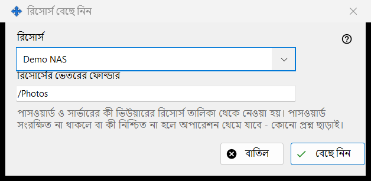
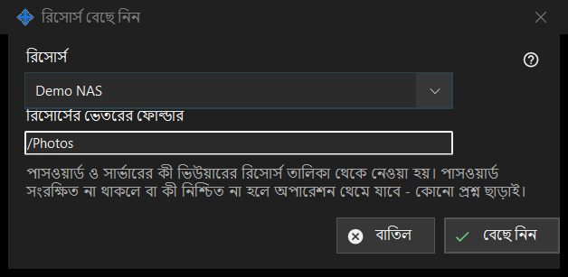

রিসোর্স বেছে নিন
এটি কীসের জন্য
ভিউয়ারের রিসোর্স তালিকা থেকে একটি রিসোর্স সময়সূচিবদ্ধ অপারেশনের উৎস বা গন্তব্য হিসেবে বাছে। সময়সূচিবদ্ধ অপারেশন উইন্ডোতে উৎস বা গন্তব্যের পাশের রিসোর্স.. থেকে এটি খোলে।


এই ক্রমে
- রিসোর্স তালিকায় রিসোর্সটি বেছে নিন।
- রিসোর্সের ভেতরের ফোল্ডার দেখে নিন বা বদলান; এটি রিসোর্সের রুট ফোল্ডার দিয়ে শুরু হয়।
- বেছে নিন চাপুন। বাতিল আগের জায়গা রেখে দেয়।
উপাদানসমূহ
রিসোর্স তালিকা
ভিউয়ারের তালিকার শুধু SFTP সার্ভার ও নেটওয়ার্ক ফোল্ডার দেওয়া হয়, নাম অনুসারে সাজানো; অন্য ধরনের রিসোর্স দেখা যায় না। কোনোটি না থাকলে উইন্ডো বলে: রিসোর্স তালিকায় কোনো উপযুক্ত রিসোর্স নেই। ভিউয়ারে একটি SFTP সার্ভার বা নেটওয়ার্ক ফোল্ডার যোগ করুন। এবং বেছে নিন নিষ্ক্রিয় থাকে। রিসোর্স যোগ করা বা আবার বিশ্বাস করা ভিউয়ারে হয়; এই উইন্ডো কোনো সংযোগ করে না।
রিসোর্সের ভেতরের ফোল্ডার
ফোল্ডারটি নির্বাচিত রিসোর্সের রুটের ভেতরে হতে হবে, নইলে অপারেশন উইন্ডোর সংরক্ষণ করুন তা প্রত্যাখ্যান করে। অন্য রিসোর্স বাছলে বক্সটি সেই রিসোর্সের রুট দিয়ে আবার ভরে যায়।
প্রশ্ন ছাড়া রান
পাসওয়ার্ড ও সার্ভারের কী ভিউয়ারের রিসোর্স তালিকা থেকে আসে। রান কিছু জিজ্ঞাসা করে না: পাসওয়ার্ড সংরক্ষিত না থাকলে বা সার্ভারের কী নিশ্চিত না হলে অপারেশন থেমে যায় এবং ইতিহাস কারণ জানায়। শুধু পঠনযোগ্য রিসোর্স সরানো বা মুছে ফেলার লক্ষ্য হতে পারে না, যে রিসোর্সের রুট PIN দিয়ে সুরক্ষিত তা প্রত্যাখ্যাত হয়, এবং আর্কাইভ শুধু সাধারণ ফোল্ডার নেয়।
ম্যানেজার সেটিংস · SFTP শেয়ারিং সেটিংস · এক্সচেঞ্জ সার্ভার সেটিংস